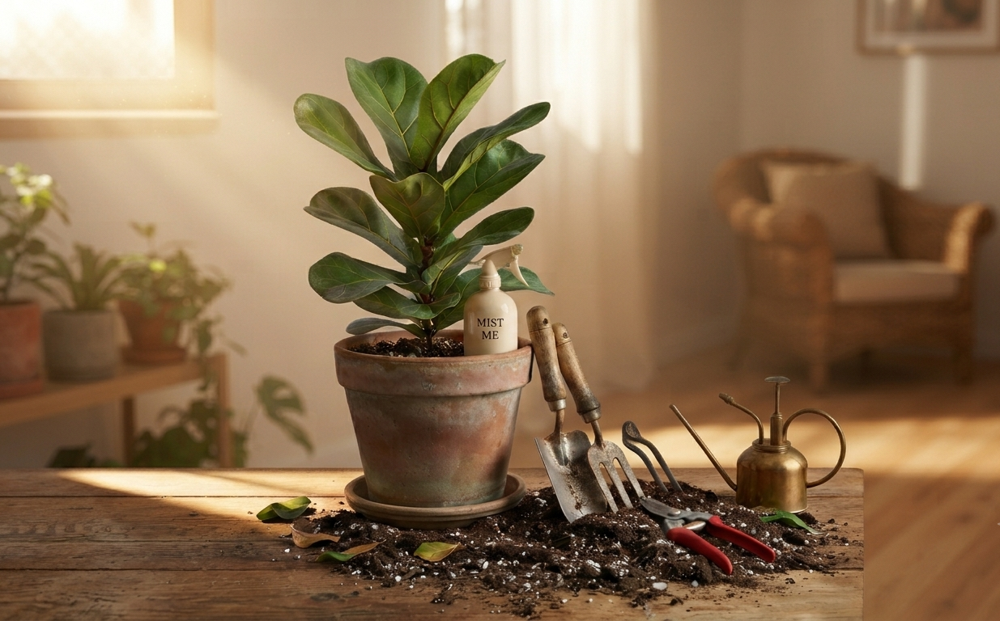

Simple plant care basics

Plants need a few basic things to grow well. Their exact needs vary, but these simple habits will help you get started.
1. Give the right amount of light
Place a plant where it receives the type of light it prefers. Bright, indirect light is suitable for many common houseplants. Avoid assuming every plant needs direct sunshine.
2. Water thoughtfully
Touch the soil before watering. If it is still damp, wait and check again later. Use a pot with drainage holes so extra water can escape.
3. Keep leaves clean
Gently wipe dusty leaves with a soft, damp cloth when needed. Clean leaves make it easier to notice new growth or signs of trouble.
4. Watch and learn
Look for changes such as yellowing leaves, very dry soil or slow growth. Make one small adjustment at a time and observe the result.
- Check the light in your chosen spot.
- Feel the soil before watering.
- Make sure the pot can drain.
- Check your plant regularly for changes.